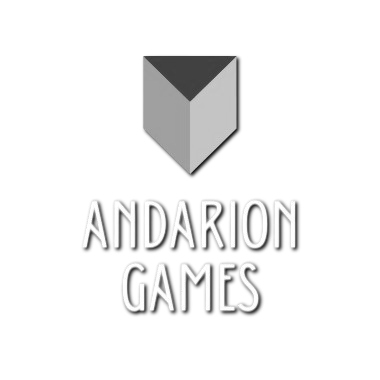
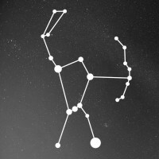

My Expertise
I work with studios and indie developers to implement gameplay systems, multiplayer features, and technical solutions that turn game ideas into polished, playable experiences.
How I work
- Understand the Feature – Discuss the gameplay mechanic or system requirements.
- Prototype – Implement a functional version for early testing.
- Iteration – Refine the system based on feedback.
- Optimization & Polish – Ensure performance and code quality.
- Integration – Deliver the feature cleanly integrated into the project.
My offer
- Transforming game concepts into polished game features
- Design and implementation of scalable gameplay systems such as inventory, abilities systems.
- Development of networked gameplay systems including client-side prediction and smoothing
- Debugging and optimization of gameplay systems to maintain smooth performance during gameplay.
- Development of editor tools and systems to help increase your team's iteration time.
Companies I worked for


